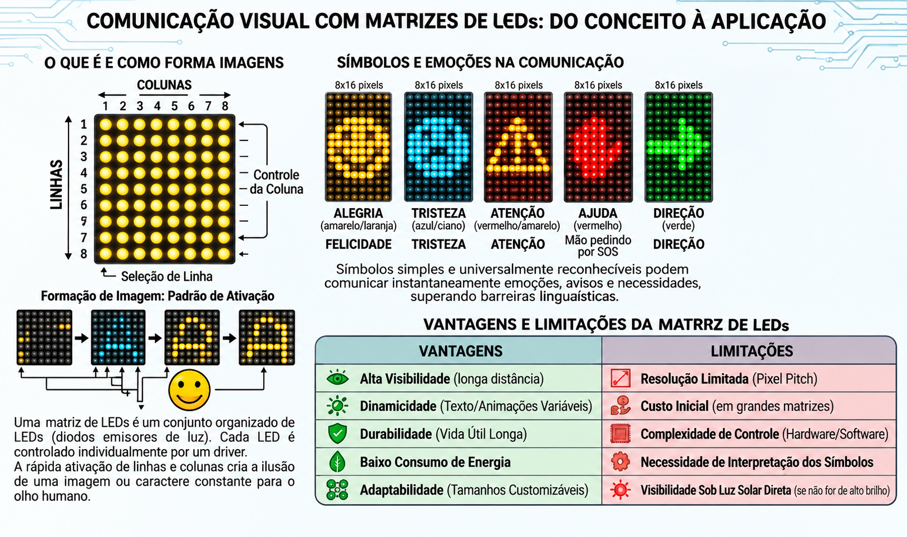
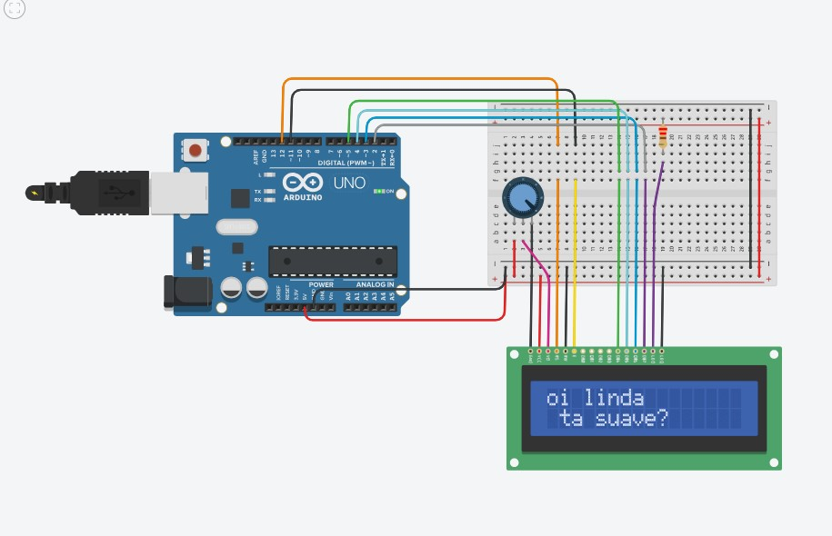

💻 Programação, Inteligência Artificial e Acessibilidade
Integrantes da Equipe: Yolanda Barrera, Emanuelle Machado, Gabriel Mendes, Samira Souza, Wuilmer Rivas
🔐 Atividade 1: PersonaLock v1.0 (Proteção de Dados Pessoais)
Criptografia Simétrica • ASCIIPainel visual desenvolvido para proteger senhas, CPFs, documentos e anotações sensíveis contra olhares curiosos através de algoritmos de deslocamento de caracteres.
O sistema utiliza uma variação moderna da clássica Cifra de César aplicada aos 95 caracteres imprimíveis da tabela ASCII (espaço ao til). A fórmula matemática usada é: C = (P + K) mod 95, onde P é o código original da letra e K é a chave secreta gerada aleatoriamente.
🧠 Atividade 2: Explorando os LLMs — Leitura Facilitada
Engenharia de Prompt • Inclusão CognitivaNo Brasil, o analfabetismo funcional e o vocabulário médico técnico impedem milhões de idosos de entenderem suas próprias receitas e bulas. Aplicamos Engenharia de Prompt baseada nas diretrizes internacionais de Easy-to-Read (Leitura Fácil) para transformar textos clínicos complexos em orientações claras e seguras.
📄 Texto Original da Bula (Losartana Potássica — Complexo)
"Este medicamento é contraindicado em pacientes com hipersensibilidade conhecida à substância ativa ou a qualquer um dos excipientes. A coadministração com alisquireno é contraindicada em pacientes com diabetes mellitus ou insuficiência renal (TFG < 60 mL/min/1,73 m²)."
🛡️ Responsabilidade Ética (Human-in-the-Loop): Modelos de linguagem podem "alucinar" ou omitir detalhes. Em saúde, a IA atua como tradutora inicial, mas a validação humana é obrigatória para garantir que nenhuma contraindicação grave seja perdida.
🥗 Atividade 3: NutriTech — Modelo Computacional Nutricional
Regra de Três Proporcional • Saúde PreventivaBaseado na Tabela Brasileira de Composição de Alimentos (TACO/UNICAMP), o NutriTech aplica proporção matemática em tempo real para alertar sobre picos glicêmicos e excesso de sódio em uma única refeição.
- Hipertensão (OMS): O consumo máximo recomendado é de 2.000 mg de sódio/dia. Uma refeição acima de 600 mg já aciona o alerta vermelho.
- Diabetes (SBD): Refeições principais acima de 55 g de carboidratos exigem atenção redobrada ao índice glicêmico.
🎯 Desafio Rápido — Programação & IA
Fixação • ProgramaçãoNa NutriTech, a partir de quanto sódio em uma única refeição o sistema dispara o alerta vermelho para hipertensos?
🤖 Robótica Inclusiva: Soluções Tecnológicas para a Autonomia e Qualidade de Vida
Prototipagem com microcontroladores, hardware acessível e desenho universal (ABNT NBR 9050).


🔬 A Ciência como Fundamento
Estuda a fisiologia sensorial humana (visão, audição e tato) e a persistência retiniana, estabelecendo as bases do Desenho Universal para que nenhum usuário seja excluído.
⚙️ A Tecnologia como Aplicação
Concretiza o projeto usando microcontroladores (Arduino Uno/ESP32), barramentos I2C, matrizes MAX7219 e transdutores piezoelétricos (buzzers) de baixo custo.
🧠 A IA como Catalisadora
Permite conversão de texto em fala (TTS), reconhecimento de comandos de voz e validação prévia de fluxos de acessibilidade antes da montagem física.
🎛️ Simulador Multissensorial (Matriz de LEDs, Código Morse & Display LCD/OLED)
Interaja com os três atuadores usados no nosso protótipo de totem inclusivo:
1. Matriz de LEDs 8x8
Alegria (Rosto sorridente)
2. Código Morse (LED + Buzzer)
Aguardando acionamento...
3. Display (LCD / OLED)
📖 O que é e como funciona cada recurso do Simulador?
Guia Rápido • ApresentaçãoNo nosso protótipo de Totem Inclusivo, combinamos três formas diferentes de comunicação para atender pessoas com diferentes necessidades sensoriais e cognitivas:
Para que serve: Exibe símbolos universais (emoções, alertas e setas de direção) que são compreendidos à distância, mesmo por crianças, estrangeiros ou pessoas não alfabetizadas.
Para que serve: Garante redundância multissensorial em emergências (como o pedido universal de SOS), alcançando simultaneamente pessoas surdas (pela luz) e pessoas cegas (pelo som).
Para que serve: Apresenta instruções escritas detalhadas e o status do atendimento em tempo real, oferecendo comunicação direta e silenciosa.
🔌 Arquitetura de Hardware & Pinagem (Arduino Uno)
Eletrônica Embarcada • Baixo CustoPara tirar o protótipo do papel na escola ou em espaços públicos, cada componente se conecta ao microcontrolador de forma modular:
📊 Comparação dos Três Recursos Tecnológicos
| Recurso | O que comunica / Sinal | Aplicação | Vantagens e Limitações | Adaptações Necessárias |
|---|---|---|---|---|
| 1. Matriz de LEDs | Símbolos, setas e ícones. Sinal: Visual |
Rotas de evacuação, painéis de senha e semáforos. | Vantagem: Alta visibilidade à distância. Limitação: Pouco espaço para textos longos. |
Sinais sonoros (bipes) e contraste para daltonismo. |
| 2. Código Morse (LED + Buzzer) | Pulsos curtos (·) e longos (-). Sinal: Visual e Sonoro |
Pedidos de emergência e totens de auxílio rápido. | Vantagem: Redundância multissensorial. Limitação: Exige conhecer Morse. |
Decodificador automático para texto ou áudio falado. |
| 3. Display (LCD / OLED) | Textos completos e status. Sinal: Visual detalhado |
Totens de atendimento, menus e guias passo a passo. | Vantagem: Alta precisão textual. Limitação: Ineficaz para cegos ou analfabetos. |
Síntese de voz, fontes de alto contraste e Braille nos botões. |
💡 Proposta de Melhoria: Totem Híbrido ABNT NBR 9050
- Síntese de Voz (DFPlayer Mini): Reproduz em áudio falado toda mensagem exibida na tela.
- Retorno Háptico (Vibracall): Motor de vibração sob o botão que confirma o acionamento pelo tato.
- Altura e Alcance Universal: Instalação entre 0,80 m e 1,20 m do piso para cadeirantes e crianças, com botões em Braille ("SOS").
- Validação: Teste cego com voluntários vendados buscando 100% de autonomia tátil/auditiva.
🛡️ Uso Responsável da IA e Conclusão
A IA foi utilizada para organizar tópicos e tabelas, mas passou por rigorosa verificação humana (norma ABNT NBR 9050 e datasheets de componentes).
Correção Crítica: Identificamos que o Código Morse puro não basta em locais públicos porque a população geral não sabe decodificá-lo, exigindo tradução automática no microcontrolador.
🎯 Desafio Rápido — Robótica Inclusiva
Fixação • RobóticaPor que um totem acessível não deve depender APENAS de um Display LCD com texto escrito?
🔊 Ciência do Som: Audição, Acessibilidade e Qualidade de Vida
Investigação acústica experimental no ambiente escolar e propostas de mitigação sonora.
🌊 Natureza da Onda Sonora
O som é uma onda mecânica, longitudinal e tridimensional. No ar a 20 °C, viaja a aproximadamente 343 m/s, mas em meios sólidos (como paredes e metais) supera 5.000 m/s.
🎵 Escala Logarítmica (dB)
A intensidade segue a equação β = 10 · log10(I / I0). Como a escala é logarítmica, um salto de 70 dB para 80 dB representa 10 vezes mais intensidade sonora!
🩺 Impacto Neurosensorial (OMS)
Acima de 85 dB ocorre lesão nas células ciliadas da cóclea (PAIR). Além disso, ruídos constantes elevam o cortisol, prejudicando a concentração e sobrecarregando alunos neurodivergentes (TEA).
🚦 Simulador: Semáforo do Ruído Escolar
Arraste o controle para testar os níveis medidos na escola e ver o impacto na saúde e aprendizagem:
🏛️ Por que a Quadra Fechada atingiu 84 dB? (Fenômenos Físicos)
Acústica Arquitetônica • Reverberação📋 Tabela de Registro de Medições na Escola (13/11)
| Valor | Data / Hora | Mín / Méd / Máx | Local / Acontecimento | Observações |
|---|---|---|---|---|
| 83 dB | 13/11 | 07:59 | Mín: 39 | Méd: 75 | Máx: 83 | Aula E.F. Quadra Aberta | Nível considerável de ruído devido à atividade física. |
| 84 dB | 13/11 | 08:04 | Mín: 49 | Méd: 73 | Máx: 85 | Aula E.F. Quadra Fechada | Maior nível registrado; próximo ao limite de risco (85 dB). |
| 73 dB | 13/11 | 08:09 | Mín: 49 | Méd: 67 | Máx: 73 | Sala de Aula Vazia | Queda no nível de ruído pela ausência de pessoas. |
| 68 dB | 13/11 | 08:12 | Mín: 38 | Méd: 55 | Máx: 68 | Biblioteca Vazia | Ambiente mais tranquilo e propício à concentração. |
| 66 dB | 13/11 | 08:15 | Mín: 54 | Méd: 63 | Máx: 66 | Banheiro Vazio | Menor valor registrado na investigação. |
| 77 dB | 13/11 | 08:19 | Mín: 56 | Méd: 68 | Máx: 67* | Sala da Pedagogia | Aumento de ruído por conversas simultâneas no atendimento. |
🔎 Análise Científica dos Resultados Coletados
O maior foi na quadra fechada (84 dB, pico de 85 dB) durante a aula de Educação Física. O menor foi no banheiro vazio (66 dB).
Densidade de pessoas, conversas simultâneas, gritos, movimentação intensa e reverberação em ambientes fechados sem tratamento acústico frente a locais vazios.
Sim. Às 07h59 e 08h04 (horário de aula agitada nas quadras) os valores atingiram 83–84 dB. Em seguida, em locais vazios (biblioteca e banheiro), caíram para 68 dB e 66 dB.
Amostragem pontual em horários restritos. Decibelímetros de smartphone dependem da curva de resposta do microfone MEMS e não possuem calibração IEC 61672 profissional, servindo como indicador educativo.
Instalação de painéis absorventes (espuma acústica ou cortiça), ponteiras de borracha nas cadeiras, cortinas espessas e gestão do fluxo de atendimento.
🏫 Propostas Práticas de Melhoria na Escola
- Tratamento Acústico Sustentável: Painéis feitos com caixas de ovos/cortiça ou placas de lã de PET na quadra fechada e ponteiras de feltro nos pés das cadeiras.
- Semáforo Eletrônico do Som: Sensor de som ligado a um Arduino que acende luz amarela/vermelha na Biblioteca e Pedagogia (77 dB) quando o volume passa do limite saudável.
🤖 Uso Crítico da Inteligência Artificial
A IA auxiliou na estruturação dos tópicos e revisão textual. Nenhum dado pessoal de alunos foi exposto, e todos os parâmetros científicos (limites da OMS e faixa audível) foram validados em materiais didáticos de Física e Biologia.
🎯 Desafio Rápido — Física & Tecnociência
Fixação • FísicaQual local da escola registrou o maior pico de ruído (84 dB / máx. 85 dB) na investigação acústica?